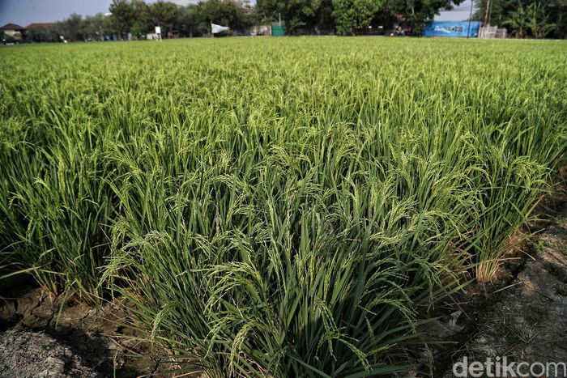
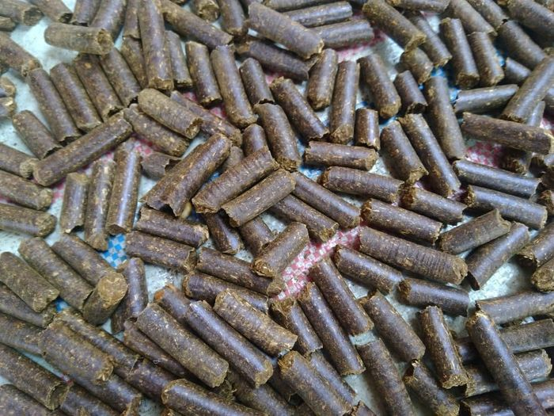

Ramah Lingkungan, Pestisida Nabati Digunakan Petani Pati Atasi Hama
Kementerian Pertanian (Kementan) mendukung penggunaan pestisida nabati (pesnab) untuk mengendalikan hama penggerek batang padi. Pesnab semakin diminati petani sebagai pilihan pertama saat tanaman terkena hama atau penyakit......baca selengkapnya >>>>>>

baca selengkapnya >>>>>>
Kaltara Bisa Jadi Sumber Pangan Ibu Kota Baru di Kaltim
Kementerian Pertanian (Kementan) tengah menyiapkan Provinsi Kalimantan Utara (Kaltara) sebagai daerah penyangga pangan ibu kota baru di Kalimantan Timur (Kaltim). Ini menjadi langkah strategis guna menyediakan pangan ibu kota baru secara berdaulat tanpa impor."Ada tiga kabupaten yang dipilih yakni Kabupaten Bulungan, Malinau dan Nunukan," ujar Inspektur Jenderal Kementan, Justan Riduan Siahaan dalam keterangan tertulis, Kamis (12/9/2019).........baca selengkapnya >>>>>>

baca selengkapnya >>>>>>
Olahan Daun Gambir Diminati Pasar India dan Bangladesh
Kementerian Pertanian (Kementan) melalui Karantina Pertanian Belawan mensertifikasi 54 ton pelet yang merupakan produk olahan daun gambir asal Pakpak Bharat, Sumatera Utara (Sumut) senilai Rp 1,9 miliar ke India melalui Pelabuhan Belawan. Komoditas ini merupakan yang paling banyak diminati di India dan Bangladesh."Komoditas gambir ini termasuk produk pertanian yang diminati dunia, khususnya India dan Bangladesh," ujar Kepala Karantina Pertanian Belawan Hasrul dalam keterangan tertulis, Jum'at (13/9/2019)......baca selengkapnya >>>>>>